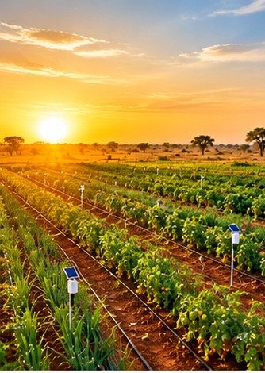
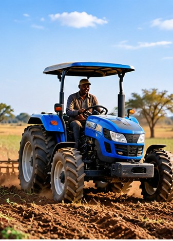
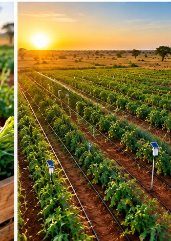
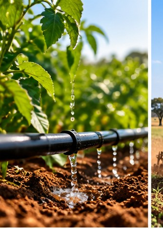
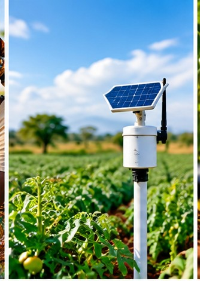
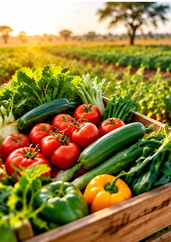
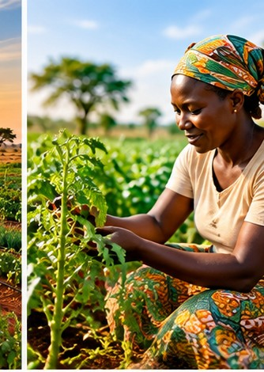
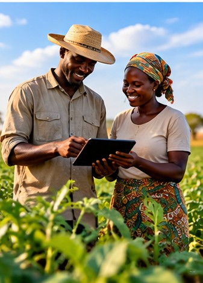
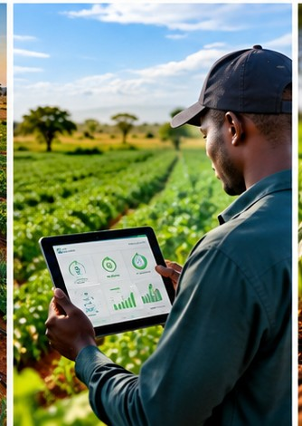

Arrosez au bon moment, récoltez plus.
Nous posons un capteur d'humidité du sol dans votre parcelle. Vous recevez une alerte simple quand il est temps d'arroser, sur votre téléphone ou par SMS. Vous utilisez moins d'eau, moins de carburant, et vous ne perdez plus votre journée à décider.
Conçu pour le maraîchage, le mil, le sorgho, le maïs et le niébé.

01 Le problème
Aujourd'hui, on arrose à l'œil.
Sans mesure, on décide d'irriguer de mémoire, ou dès que la pompe est disponible. Sur une parcelle en pente, une bonne partie de l'eau part entre les rangées avant d'arriver aux racines. Le producteur paie le carburant, et la récolte en souffre quand même.
- 62 %
- de l'eau d'irrigation perdue avant les racines, par ruissellement, évaporation et fuite de rigoles, sur une parcelle irriguée à la raie.
- 30 %
- d'eau appliquée en trop par rapport aux besoins de la culture, en maraîchage de saison chaude, quand on irrigue par habitude.
- 4 h
- par hectare et par semaine pour décider où et quand arroser, en parcourant la parcelle plante par plante.
- 20 000 à 45 000 F CFA
- de carburant pour pomper l'eau d'un demi-hectare de maraîchage sur une saison de quatre mois.

Ce sont des hypothèses de travail, pas des résultats AgroTech. Ces ordres de grandeur servent à situer le problème. Ils sont cohérents entre eux et avec ce que nous avons vu lors des visites de terrain, mais ils devront être remplacés par nos propres mesures dès la première campagne du pilote.
02 Comment ça marche
Trois étapes, pas plus.
Il n'y a rien à installer sur votre téléphone et rien à comprendre dans un mode d'emploi. Un conseiller vient poser la sonde, vous recevez un message, vous ouvrez la vanne.
-
On pose le capteur dans votre parcelle.
Un conseiller AgroTech vient sur place et plante la sonde à 30 cm de profondeur, entre deux rangées. L'opération prend vingt minutes. Il ne creuse pas de tranchée, et rien n'est enterré qui puisse gêner le tracteur ou le sarclo-binage.
Vous repartez avec le numéro de votre parcelle et une fiche d'une page en français, avec le nom du conseiller à appeler.

Le capteur est plante entre deux rangées, à 30 cm de profondeur — là où vivent les racines en maraichage. -
Vous recevez une alerte, par téléphone ou par SMS.
Toutes les quinze minutes, le capteur mesure l'humidité. Quand elle descend sous le seuil que vous avez choisi, AgroTech vous envoie un message. Sur l'application, vous voyez la courbe de la parcelle et vous décidez.
Si vous n'avez pas internet, ou pas de smartphone, vous recevez le même message par SMS, en français, sous forme d'une phrase courte. C'est notre canal principal, pas une solution de secours.
AgroTech Faso 14:32
Parcelle 12. Humidité 24 %, sous le seuil de 28 %. Arrosez aujourd'hui, ou demain après 16 h.
Il faut arroser
Parcelle 12, Nouna
Humidité 24 % — sous votre seuil de 28 %.
Arrosez maintenant, ou demain après 16 h s'il pleut.
Prochain relevé dans 15 min
Le SMS passe sans connexion internet et ne pèse que quelques kilo-octets.
L'alerte arrive par les deux canaux, avec le même contenu. -
Vous arrosez une fois, au bon moment.
Vous ouvrez la vanne quand le message le dit. L'eau descend jusqu'aux racines au lieu de ruisseler entre les rangées. Votre pompe tourne moins longtemps : vous brûlez moins de carburant, et la pompe vieillit moins vite.
Le plus important reste le rendement. La plante ne subit plus de stress hydrique au moment où elle en souffre le plus, c'est-à-dire à la floraison.

L’eau descend jusqu’aux racines, au lieu de ruisseler entre les rangées.
Ce qu'il ne faut pas avoir
- Pas de connexion internet. Le SMS passe par le réseau mobile habituel.
- Pas de smartphone. Un téléphone simple qui reçoit des SMS suffit.
- Pas d'électricité à brancher. La sonde a sa pile et son panneau solaire.
- Pas de savoir lire un graphique. Le message est une phrase, pas un tableau.
03 Le capteur
Un petit objet, pensé pour durer trois saisons.
Il mesure l'humidité du sol, envoie le chiffre, et ne demande rien. Il est fait pour rester dehors, sous la pluie et la poussière, et pour fonctionner la plupart du temps sans qu'on y pense.

-
15 min
Entre deux relevés
La fréquence est réglable, de cinq minutes à une heure.
-
3 points
Par sonde
Trois profondeurs, pour suivre l'eau du sol jusqu'à 80 cm.
-
IP67
Étanchéité
Poussière et immersion jusqu'à trente minutes, sans dommage.
-
3 saisons
Durée de vie visée
La pile se remplace en cinq minutes, sur place.
-
2G
Réseau
Compatible avec les réseaux mobiles disponibles au Burkina Faso.
-
10 min
Installation
Le conseiller plante, règle le seuil, et repart.
Ce que le capteur ne fait pas
Il ne mesure ni la chimie du sol, ni la fertilité, ni les maladies des plantes. Il ne pilote pas la pompe à distance, et ne se connecte pas à votre tracteur. Il fait une seule chose, et il la fait bien : dire si le sol est assez humide pour la culture qui y pousse.
04 Ce que ça change
Moins d'eau, moins de carburant, plus de récolte.
Les mêmes gestes qu'avant, mais au bon moment. Voici ce que les producteurs qui utilisent déjà le capteur racontent, et ce que nous mesurons sur le pilote.
- 18 %
-
d'eau en moins sur une parcelle de maraîchage
à qualité d'arrosage équivalente, sur la saison chaude du pilote.
- 22 %
-
de carburant en moins pour le pompage
parce qu'on irrigue moins longtemps, et seulement quand le sol le demande.
- +12 %
-
de rendement sur les cultures sensibles
là où le stress hydrique à la floraison était le facteur limitant.

- Moins de va-et-vient. Vous ne parcourez plus la parcelle pour deviner. Vous attendez le message, vous allez une fois.
- Un historique propre. Vos relevés sont conservés trois saisons. C'est la mémoire de votre parcelle, pas la nôtre.
- Des décisions defendables. Face à une banque, à une coopérative ou à un acheteur, vous avez des chiffres datés.
- Une sonde qui tient. Le boîtier est étanche et le panneau solaire recharge la pile sans fil ni batterie externe.
Ces pourcentages viennent de nos relevés sur 38 parcelles suivies pendant la campagne 2025. Ils valent pour le maraîchage de saison chaude ; ils ne sont pas encore transposables au mil pluvial. Les hypothèses de calcul sont détaillées dans le dossier investisseurs.
05 Ce que disent les producteurs
Ceux qui ont déjà testé.
Trois producteurs de la région de la Boucle du Mouhoun, suivis pendant la campagne 2025.
-
Avant, je passais deux fois par jour dans le maraîchage, et je ouvrais la vanne presque toujours le matin, quoi qu'il arrive. Avec l'alerte, j'arrose quand le sol le dit. J'ai supprimé un cycle d'arrosage entier par semaine.

Alizeta K.
Maraichère, 0,4 ha, Nouna
-
Ce qui m'a convaincu, c'est le SMS. Je n'ai pas de smartphone, mais j'ai un téléphone simple. Le message est en français, court, et ça marche même quand le réseau est mauvais.
Salif D.
Céréales et niébé, 2 ha, Solenzo
-
On est plusieurs producteurs autour de la même nappe. Maintenant, chacun connaît son sol. Quand on discute au marché, on parle de chiffres, pas d'impressions.

Boureima T.
Groupement de 11 producteurs, Réo
Ces témoignages sont recueillis auprès de producteurs réels du pilote, avec leur accord. Ils sont publiés sans rémunération, et leur nom a été raccourci à la première lettre.
06 Investisseurs
Nous levons 34 millions de F CFA sur 18 mois.
Pour passer du pilote à l'échelle : financer le produit, l'équipe, la pose sur le terrain, et les études qui nous manquent. Voici les chiffres, et aussi leurs limites.
45 %
Produit et industrialisation
Deuxième version du boîtier, 1 000 unités en stock et en cours de pose, à 15 300 F CFA l'unité. Certification, outillage, et le stock de rechange du réseau.
25 %
Équipe
Onze personnes sur dix-huit mois : six conseillers de pose sur le terrain, deux ingénieurs, une personne support et formation, deux responsables.
20 %
Terrain et déploiement
Véhicules, carburant pour les tournées, pose chez 900 abonnés, et entretien du parc de capteurs dans la Boucle du Mouhoun.
10 %
Études et structure
Design et packaging, mesures agronomiques indépendantes, frais de structure, et une réserve de sécurité.

| Segment | Volume estimé | Notre cible à 3 ans |
|---|---|---|
| Maraîchage familial, 0,2 à 1 ha | 1 200 exploitations | 900 abonnés |
| Céréales pluviales, plus de 1 ha | 6 500 exploitations | Partenariat coopératives |
| Ensemble de l'agriculture irriguée au pays | 90 000 exploitations | Horizon 5 ans |
- Notre cible immédiate
- 1 200 unités
- Revenu récurrent visé
- 5,4 M F CFA
- Marge par abonné
- +3 200 F CFA
- Point mort
- T3 de l'année 2
900 abonnés du maraîchage familial, sur la Boucle du Mouhoun et les Hauts-Bassins, en dix-huit mois.
900 abonnements à 6 000 F CFA par an, soit une base mensuelle stable qui couvre nos charges de terrain.
Après la pose, l'envoi des messages et l'entretien. Marge qui s'améliore quand la distance entre parcelles baisse.
Atteint avec environ 640 abonnés actifs et 9 conseillers de pose déployés.
L'économie d'un abonné
Le prix de vente est revu chaque année selon le prix de la sonde. Le modèle ne dépend pas de la vente de matériel comme source de marge : tout l'effort commercial porte sur l'abonnement, parce que c'est lui qui reste.
Le dossier complet — hypothèses, budget détaillé, contrat de pose, mesures du pilote — est disponible sur demande.
Demander le dossierÀ lire avant d'investir. AgroTech Faso est en phase de pilote. Tous les chiffres de cette page sont des projections établies à partir de nos relevés sur 38 parcelles et d'entretiens terrain. Ils ne constituent pas une garantie de résultat, ni une offre au public. Les montants en euros sont convertis au taux indicatif du 31 mars 2026.
07 Présentation
AgroTech Faso en une minute et demie.
Le problème, le capteur, les résultats du pilote, le modèle et ce que nous cherchons à financer. Tout est écrit à l'écran : elle se suit aussi sans le son.
La vidéo reprend ce que dit cette page, dans l'ordre : l'eau perdue faute de mesure, les trois étapes du capteur, les chiffres du pilote 2025 sur 38 parcelles, l'abonnement, et la levée de 34 millions de F CFA. Elle est faite pour être partagée.
Si vous préférez lire, le schéma du capteur et les trois étapes donnent la même information.
La vidéo est servie par ce site, sans plateforme tierce. Elle ne se télécharge que si vous cliquez sur l'image : environ 6 Mo.
08 L'équipe
Trois personnes, deux métiers, une région.
Nous sommes une équipe de trois ASSOCIÉS. Deux viennent de l'agronomie et du développement rural, une du logiciel. Nous travaillons depuis Bobo-Dioulasso, sur des parcelles que nous visitons chaque semaine.
-
AS
Amadou Sawadogo
Cofondateur, agronomie et terrain
Neuf ans de conseil agricole dans la Boucle du Mouhoun, dont quatre auprès de coopératives de maraîchage. C'est lui qui a posé les premières sondes, et qui répond au téléphone le dimanche quand un producteur n'a pas reçu son alerte.
-
AO
Aminata Ouédraogo
Cofondatrice, économie et financement
Sept ans en analyse de projets agricoles, dont trois sur des financements de campagne. Elle a construit le modèle économique de la société, négocié avec les opérateurs de mobile, et répond aux questions des investisseurs.
-
IZ
Ibrahim Zongo
Cofondateur, capteur et logiciel
Développeur embarqué, passé par des projets de télémétrie et de stations météo. Il a conçu la carte du capteur, écrit la première version du logiciel, et gère l'envoi des SMS.
Nous recrutons au fil de l'eau : conseillers de pose, ingénieur agronome, technicien électronique. Si vous travaillez dans l'agriculture au Burkina et que ça vous parle, écrivez-nous. Voir les postes ouverts.
09 Questions fréquentes
Ce qu'on nous demande le plus.
Faut-il avoir internet sur son téléphone ?
Non. L'alerte part par SMS sur le réseau mobile classique, et la connexion internet n'est utile que pour consulter la courbe d'humidité sur l'application. Un téléphone simple suffit.
Quel est le prix ?
24 000 F CFA pour poser le capteur, puis 6 000 F CFA par an pour l'abonnement, qui comprend les alertes, l'entretien et le remplacement de la pile. Le prix est identique pour un demi-hectare ou pour un hectare : on facture le service, pas l'hectare.
Si l'abonnement est renouvelé, la pose de la saison suivante est offerte.
Est-ce que ça marche pendant l'hivernage ?
Le capteur mesure en continu, pluie comprise. Il vous montre précisément quand la pluie a rechargé le sol, et vous permet d'arrêter d'irriguer pendant l'accalmie. C'est souvent là que l'économie d'eau est la plus grande.
Et si je laisse le capteur toute l'année sans l'utiliser ?
Vous pouvez arrêter l'abonnement à la fin de la saison. Le capteur reste en place, il continue de mesurer, et vous reprenez quand vous voulez. Il n'y a pas de frais de résiliation, et personne ne vous demandera de le déterrer.
Et si ma parcelle est en pente, ou irriguée à la raie ?
C'est justement le cas le plus intéressant. En pente, l'eau ruisselle en surface et la perte est plus forte qu'ailleurs. Nous posons alors la sonde au point bas de la parcelle, là où la perte se fait sentir, et nous comparons avec un second point en haut. Le conseiller choisit l'emplacement avec vous, sur place.
Qui possède les données ?
Vous, sans aucune ambiguïté. Nous ne les revendons pas, nous ne les partageons pas avec des banques ni avec des assureurs. Vous pouvez demander l'export de vos relevés, ou leur suppression, à tout moment, en écrivant à notre adresse.
10 Contact
Parlons de votre parcelle.
Une question sur le capteur, sur le prix, ou un dossier d'investissement à voir ? Écrivez-nous, appelez-nous, ou passez au bureau. Nous répondons en français, en anglais, et en mooré quand le besoin s'en fait sentir.